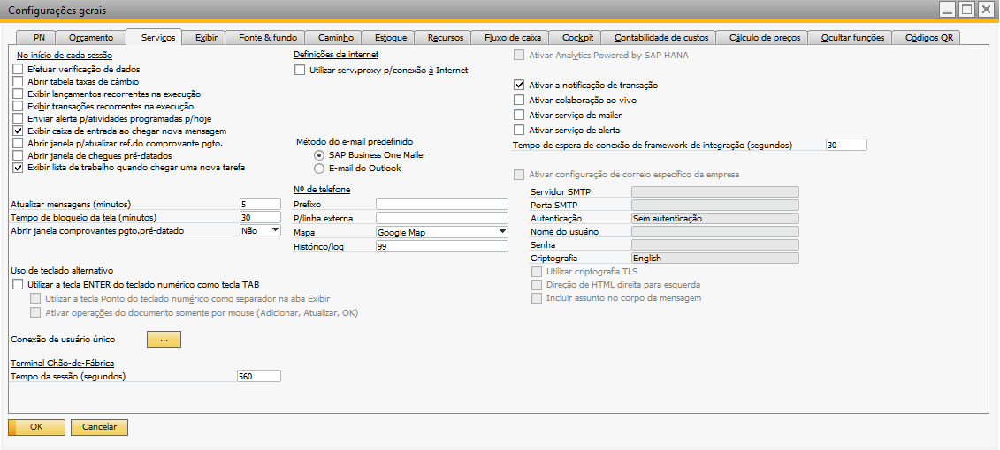

Terminal de Apontamento
O Terminal de apontamento é utilizado no chão de fabrica para realizações dos apontamentos, podendo ser utilizado pela tela ou codigo de barras.
Para acessar a tela de Terminal de Apontamento é necessário ir no menu:
Produção -> Apontamentos -> Terminal de Apontamento

Para acessar as funcionalidades do terminal, é obrigatório realizar o login.
Esse processo de login é feito utilizando os dados previamente inseridos na tela de “Cadastro de Colaboradores”.

Caso um usuário não cadastrado tente efetuar o login, a seguinte mensagem será exibida:
BR One :: Não é possível efetuar login, usuário não encontrado.
Para iniciar uma sessão, basta inserir o número do crachá no terminal, será pedida uma senha.
Caso os dados inseridos sejam inválidos, a seguinte mensagem será exibida:
BR One :: Crachá ou senha inválida
Após iniciar uma sessão, o contador irá começar a funcionar.

Caso o contador chegue a zero, será preciso iniciar uma nova sessão no terminal para poder continuar usando-o.
Sempre que houver alguma interação com o terminal, o contador irá ficar completo de novo.
O tempo de sessão do terminal é definido em “Configurações gerais”, na aba “Serviços”.
-Iniciar produção
Nesta tela, você pode iniciar um recurso no processo de produção.

Para iniciar a produção, basta fornecer o número da ordem de produção (OP) e a sequência da operação. As operações externas não serão listadas. Em seguida, será exibida uma lista de recursos disponíveis. Você poderá selecionar um recurso específico ou marcar a opção para “Iniciar todos os recursos” da lista em configurações de produção, na aba Apont. prod. Além disso, é possível informar a quantidade desejada de cada recurso no campo ‘Quantidade do recurso’.
No campo de status, serão exibidos apenas os status que pertencerem à categoria “Produção” ou “Retrabalho”.
Será realizada algumas validações para iniciar o processo de iniciar produção, sendo elas:
Caso tente iniciar produção sem especificar um Ordem de produção (OP), a seguinte mensagem de erro será exibida:
BR One :: Informe uma ordem de produção.
Caso tente iniciar produção sem especificar uma operação, a seguinte mensagem de erro será exibida:
BR one :: Informe uma operação.
Caso tente iniciar produção sem especificar um status, a seguinte mensagem de erro será exibida:
BR One :: Selecione pelo menos um recurso.
Se a opção “Permitir edição após liberação” estiver marcada na ordem de produção (OP) e o grupo de recursos contiver grupos de recursos alternativos, na grade será exibido o grupo de recursos principal juntamente com seus grupos alternativos.
Na tela de Configuração de produção, existe a opção “Quant. de peças na oper. atual não pode ser maior que quant. de peças boas na oper. anterior” que verifica se as operações estão sendo iniciadas na ordem correta. Apenas é permitido iniciar as operações sequencialmente, ou seja, se a OP (Ordem de Produção) tiver 5 operações: 10, 20, 30, 40 e 50, a primeira operação a ser iniciada será a 10, em seguida a 20 e assim por diante. Caso o usuário tente iniciar uma operação sem ter iniciado a operação anterior, será exibida a seguinte mensagem de erro:
BR One :: Não foi realizado apontamentos para a operação anterior a esta.
-Parar produção
Nesta tela, você pode parar um recurso no processo de produção.

Para interromper a produção, basta fornecer a quantidade de peças boas produzidas, a quantidade de peças refugadas e o status do recurso. Em seguida, selecione qual recurso deseja encerrar.
É possível interromper todos os recursos de uma determinada operação, selecionando uma linha que corresponda à operação e marcando a opção “Parar todos os recursos da operação”.
No campo de status, só é possível selecionar os status que pertençam às categorias “Fora de turno”, “Parada não planejada”, “Parada planejada I” e “Parada planejada II”.
Caso tente parar a produção sem informar a classificação do refugo, a seguinte mensagem será exibida:
BR One :: Informe uma classificação para o refugo.
Caso tente parar a produção sem informar o status, a seguinte mensagem será exibida:
BR One :: Informe um valor para o campo ‘Status’.
Caso tente parar a produção sem selecionar ao menos um recurso, a seguinte mensagem será exibida:
BR One :: Selecione ao menos um recurso para ser encerrado.
Caso tente selecionar a flag para “Parar todos os recursos da operação”, sem ter selecionado uma linha para o processo saber qual operação deve ser considerada, a seguinte mensagem será exibida:
BR One :: Selecione uma linha.
-Alteração status recurso
O funcionamento dessa tela está detalhado no tópico de Apontamentos -> Alteração status recurso deste documento.
-Pedido de transf. de estoque
Nesta tela, você pode realizar um pedido de transferência de estoque.

Para realizar um pedido de transferência de estoque, é necessário especificar o depósito de origem no cabeçalho. Nas linhas do pedido, é importante indicar o item a ser transferido, o depósito de destino e a quantidade desejada.
Além disso, existe a opção de selecionar os itens de uma Ordem de Produção (OP) utilizando a função “Copiar de” no rodapé da tela. Isso permite agilizar o processo ao aproveitar os itens já especificados em um OP existente.
Caso tente adicionar um pedido de transferência de estoque sem especificar o depósito de origem, a seguinte mensagem será exibida:
BR One :: Informe o depósito de origem
Caso tente adicionar um pedido de transferência de estoque sem linhas, a seguinte mensagem será exibida:
BR One :: Insira pelo menos uma linha
Caso tente adicionar um pedido de transferência de estoque com alguma linha sem o número do item, a seguinte mensagem será exibida:
BR One :: Informe o número do item
Caso tente adicionar um pedido de transferência de estoque com alguma linha sem o depósito de destino, a seguinte mensagem será exibida:
BR One :: Informe o depósito de destino.
Caso tente adicionar um pedido de transferência de estoque com alguma linha sem a quantidade, a seguinte mensagem será exibida:
BR One :: A quantidade deve ser maior que zero
A quantidade que será carregada nas linhas do formulário de pedido de transferência de estoque do BR One é a quantidade da linha da OP subtraída das quantidades informadas nas solicitações e transferências de estoque para aquela OP, até que a quantidade das transações ultrapasse a quantidade da linha. Quando isso ocorrer, a quantidade carregada nas linhas do formulário será igual a um.
Observação: Quando um pedido de transferência é copiado para uma transferência, faturada parcialmente e essa transferência é cancelada, a quantidade cancelada é somada a quantidade em aberto para geração de novas transações, pois o processo nativo do B1 não soma a quantidade cancelada no pedido de transferência.
Exemplo:
Linha da OP: 50 unidades
Pedido de transferência de estoque: 5 unidades em aberto
Transferência de estoque copiado da Pedido de transf. de estoque: 3 unidades
Pedido de transf. de estoque: 2 unidades em aberto
Transferência de estoque Cancelada: -3 unidades
Pedido de transf. de estoque: 2 unidades em aberto
Linha da OP: 48 unidades
-Transferência de estoque
Essa opção de transferência de estoque pode não ser exibida caso o usuário possua a licença “Indirect User Access” sem outra licença que permita utilizar telas nativas do SAP.
Nesta tela, você pode realizar uma transferência de estoque.

Para realizar uma transferência de estoque, é necessário especificar o depósito de origem no cabeçalho. Nas linhas do pedido, é importante indicar o item a ser transferido, o depósito de destino e a quantidade desejada.
Além disso, existe a opção de selecionar os itens de uma Ordem de Produção (OP) utilizando a função “Copiar de” no rodapé da tela. Isso permite agilizar o processo ao aproveitar os itens já especificados em um OP existente.
Caso tente adicionar um pedido de transferência de estoque sem especificar o depósito de origem, a seguinte mensagem será exibida:
BR One :: Informe o depósito de origem
Caso tente adicionar um pedido de transferência de estoque sem linhas, a seguinte mensagem será exibida:
BR One :: Insira pelo menos uma linha
Caso tente adicionar um pedido de transferência de estoque com alguma linha sem o número do item, a seguinte mensagem será exibida:
BR One :: Informe o número do item
Caso tente adicionar um pedido de transferência de estoque com alguma linha sem o depósito de destino, a seguinte mensagem será exibida:
BR One :: Informe o depósito de destino.
Caso tente adicionar um pedido de transferência de estoque com alguma linha sem a quantidade, a seguinte mensagem será exibida:
BR One :: A quantidade deve ser maior que zero
A quantidade que será carregada nas linhas do formulário de pedido de transferência de estoque do BR One é a quantidade da linha da OP subtraída das quantidades informadas nas solicitações e transferências de estoque para aquela OP, até que a quantidade das transações ultrapasse a quantidade da linha. Quando isso ocorrer, a quantidade carregada nas linhas do formulário será igual a um.
Observação: Quando um pedido de transferência é copiado para uma transferência, faturada parcialmente e essa transferência é cancelada, a quantidade cancelada é somada a quantidade em aberto para geração de novas transações, pois o processo nativo do B1 não soma a quantidade cancelada no pedido de transferência.
Exemplo:
Linha da OP: 50 unidades
Transferência de estoque: 5 unidades
Transferência de estoque Cancelada: -5 unidades
Linha da OP: 50 unidades
-Entrada de produto acabado
O funcionamento dessa tela está detalhado no tópico de Apontamentos -> Entrada de produto acabado deste documento..
Saída de insumos
O funcionamento dessa tela está detalhado no tópico de Apontamentos -> Saída de insumos deste documento.
Saída de produto acabado
O funcionamento dessa tela está detalhado no tópico de Apontamentos -> Saída de produto acabado deste documento.
Entrada de componentes
O funcionamento dessa tela está detalhado no tópico de Apontamentos -> Entrada de componentes deste documento.
-Sair
Ao clicar no botão “Sair”, a seguinte mensagem será exibida:

BR One :: Será efetuado logoff do terminal de apontamento. Continuar?
Ao clicar em “Sim”, será feito logoff do usuário conectado. Ao clicar em “Não”, o usuário continuará conectado.
Caso o usuário clique em Sair sem estar conectado, a seguinte mensagem será exibida:
BR One :: Nenhum usuário conectado.